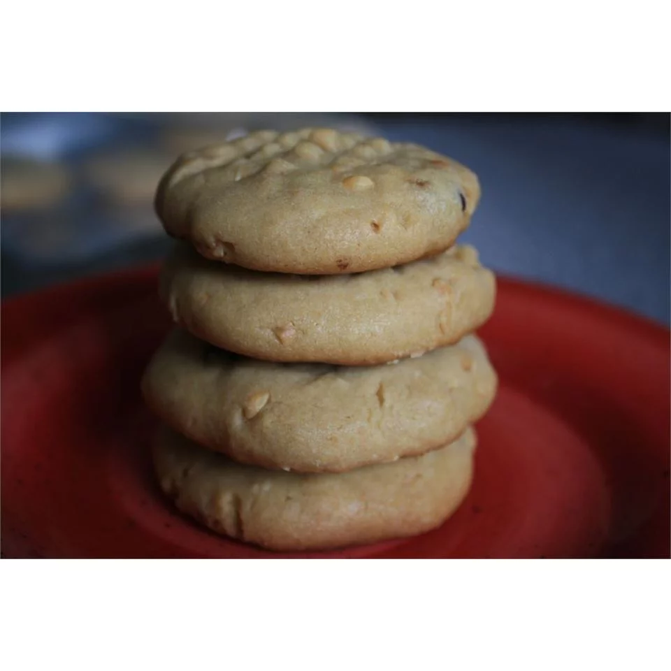

"Classic peanut butter cookies"

Recipe:
beautiful simple cookies to enjoy before a trip, a hike or a sport session.
it's great energy for the day
Ingredients
- 1 cup of unsalted butter
- 1 cup crunchy peanut butter
- 1 cup white sugar
- 1 cup packed brown sugar
- 2 large eggs eggs
- 2 1/2 cups all-purpose flour
- 1 teaspoon baking powder
- 1/2 teaspoon salt
- 1 1/2 teaspoons baking soda
Steps
- Cream butter, peanut butter, and sugars together in a bowl; beat in eggs.
- In a separate bowl, sift flour, baking powder, baking soda, and salt, stir into butter mixture.
Put dought in refrigerator for 1 hour.
- roll dough into 1 inch balls and put on baking sheets/ Flatten each ball with a fork,
making a crisscross pattern. Bake in a preheated 375 degrees F oven for about 10 minutes
or until cookies begin to brown.